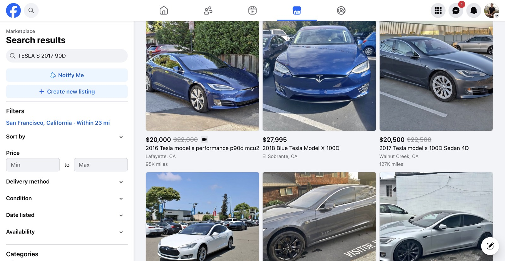
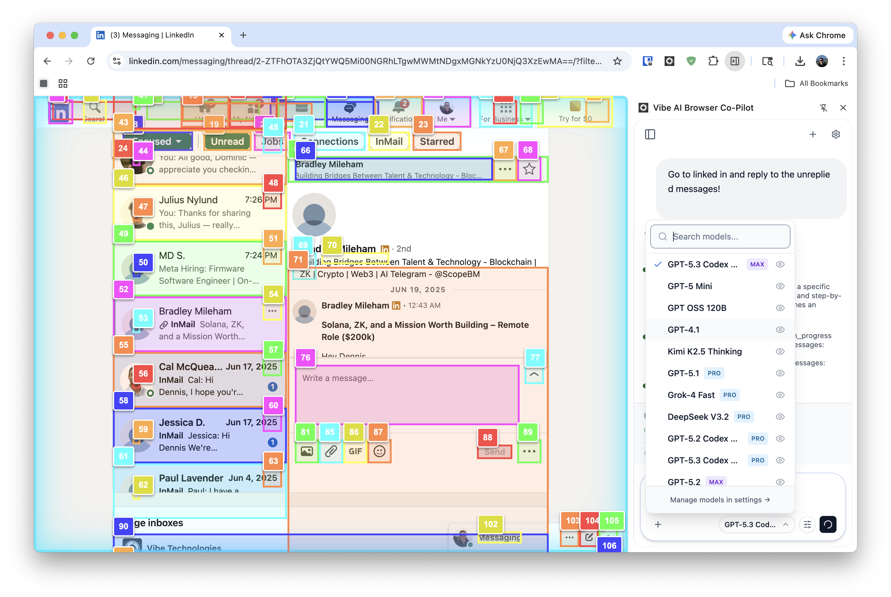
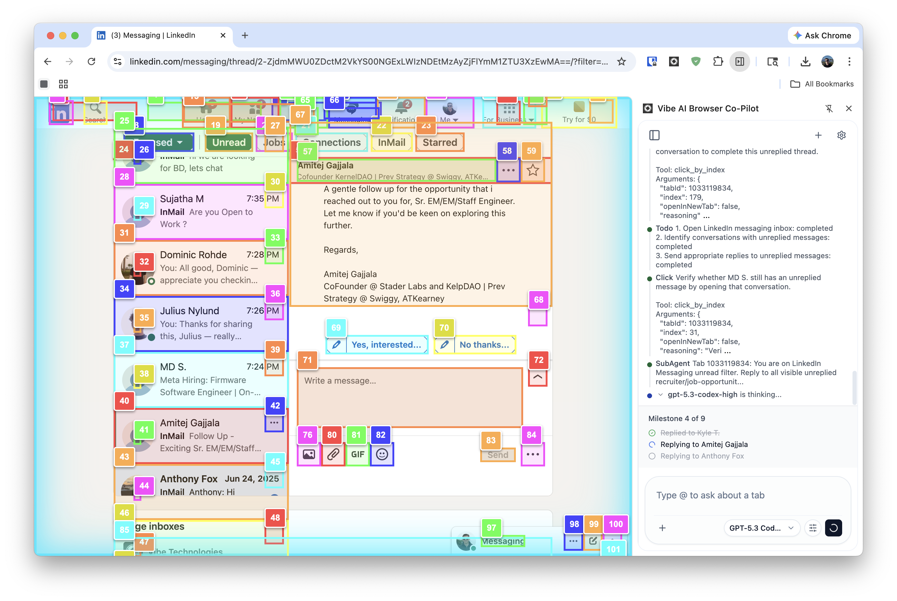

The AI copilot that runs in your browser, locally, privately, on any model.
Dennis Vashchuk · Technical Co-Founder · March 2026
It's all manual. It all happens in a browser. Existing copilots still fail too often on real workflows.

Proof surface: Facebook Marketplace navigation captured via Chrome DevTools MCP.
Dense UIs like this expose why context-heavy browser loops get brittle fast.
AI copilot that clicks, reads, fills forms, sends emails, and manages calendar tasks.
Input in plain English or voice. Vibe executes the workflow for you.
Gmail and Google Calendar integrations are built in.
Local-first by default, with optional cloud models (BYOK) when needed.


Product screenshots: LinkedIn demo workflows executed by Vibe Co-Pilot.
| Factor | Cloud / API Agents | Vibe (Local-First) | Source |
|---|---|---|---|
| Reliability | Fail due to network latency & context limits | Stable DOM-based execution | "Why Do Multi-Agent LLM Systems Fail?" (arXiv 2025) |
| Privacy | High risk of data leakage & injection | Data never leaves your device | "Privacy Risks of LLM Agents" (Microsoft Research 2024) |
| Latency | Variable (0.4s - 2.0s+) | Fast & Deterministic (<1s) | SitePoint Benchmarks 2026 |
| Cost | Scales linearly ($0.03/1k tokens) | Fixed hardware cost ($0/token) | arXiv: On-Premise LLM Economics |
"Agent-to-agent communications in context-rich enterprise environments markedly increase privacy risk." — Microsoft Research
Vibe architecture directly addresses the key failure modes identified in recent academic literature.
| Feature | Vibe (Local-First) | Comet / Atlas / Operator |
|---|---|---|
| Execution | Local DOM (Reliable) | Cloud Streaming (Fragile) |
| Data Privacy | Zero-Retention (Device only) | Server-Side Storage |
| Workflow Focus | Complex, Multi-Step Tasks | Simple Q&A / Search |
| Marginal Cost | $0 (Uses User Hardware) | High (Server GPU Costs) |
The Moat: While others fight for cloud dominance, Vibe owns the local execution layer—where the work actually happens.
Open portals, fetch client documents, and organize filings automatically.
Source profiles, personalize outreach drafts, and queue approved messages.
Resolve conflicts, schedule meetings, and keep availability synchronized.
No other browser AI has this. Skills can be versioned, reused, and shared across teams.
Growing organically through word-of-mouth in developer and privacy communities.
Legal, Tax, & Finance professionals who cannot use cloud agents.
Global knowledge workers with repetitive browser-based workflows.
Why here? Compliance-heavy teams have the highest willingness to pay and zero viable alternatives today.
This local-first segment is underserved and not the focus of Comet, Atlas, or Operator.
| Tier | Price | Includes |
|---|---|---|
| Free | $0 | Limited usage for evaluation |
| Pro | $25/mo | BYOK model access and advanced skills |
| Premium | $100/mo | Bundled credits and all supported models |
GTM: Acquire via Chrome Web Store + founder-led outbound, convert free-to-pro via repeated workflow value, expand via team controls and MCP interoperability.
Enterprise and team plans are the next expansion layer.
Dennis Vashchuk, Technical Co-Founder
Raising: $2M pre-seed
Target close: May 2026